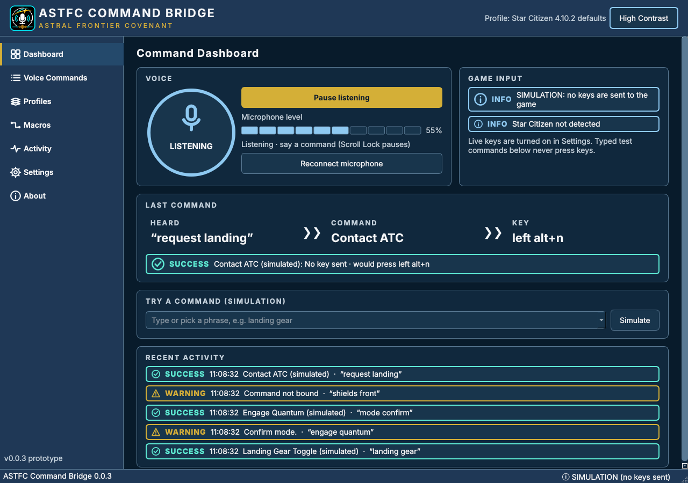

Fly Star Citizen with your voice.
Say “landing gear”, “request landing” or “engage quantum”, and ASTFC Voice Protocol presses the key for you. Speech recognition runs offline on your PC; nothing you say is sent anywhere.
Download for Windows
Before you start
- Run the Setup file you downloaded. It installs for your account only and adds ASTFC Voice Protocol to the Start menu. (Prefer no install? Get the windows.zip instead, extract the whole folder, and run the .exe inside.)
- Windows may say it protected your PC because the app isn't signed yet. Click More info, then Run anyway.
- Check your microphone. The app uses your Windows default mic. If nothing is heard, see Windows Settings › Privacy & security › Microphone, and Settings › System › Sound.
- Offline speech needs English installed in Windows: Settings › Time & language › Speech.
- It starts in simulation: it shows what it heard but presses no keys. When you're ready, turn on Live keys in Settings. Keys only go to Star Citizen while its window is in front.
What it does
71 voice commands
Ship power, gear, ATC, quantum, scanning, mining and salvage modes, power triangle and more. Star Citizen 4.10.2 default keys; change any key or phrase in the app.
Safety checks
“Confirm mode.” before quantum and scan, “Are you sure?” before self destruct or quitting, and “Command not bound.” when a command has no key.
Private and offline
Uses the speech recognizer built into Windows. No account, no cloud, no internet needed to run.
Made to be readable
Two themes, both colour-blind safe
ASTFC Standard and High Contrast. No red-versus-green anywhere. Switch with Ctrl+T.
Never colour alone
Every status shows an icon and a word as well as a colour:
Your size, your keyboard
Text from 100 to 150 % (Ctrl++/−), compact or comfortable layout, and everything works from the keyboard.
Safety words
| The app says | You answer | When |
|---|---|---|
| “Confirm mode.” | “mode confirm” (within 10 s) | Before “engage quantum” or “activate scan”, unless you set that mode by voice in the last 30 s. |
| “Are you sure?” | “affirmative” to go, “negative” to cancel (within 5 s) | Before self destruct, goon mode and quitting the game. |
| “Command not bound.” | Nothing; set a key in Voice Commands | The command exists, but Star Citizen has no default key for it. |
Feedback
This is an early build for ASTFC members and friends. Tell Jeff on the ASTFC Discord what worked, what didn't, and how easy the screens are to read.
In the app, Activity › Save log… makes a file you can send. If the app won't start, it saves
crash.log in %APPDATA%\ASTFC Voice Protocol; please send that. You can also
open an issue on GitHub.